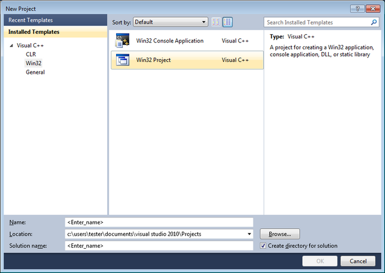

You can use MoSync with Microsoft Visual Studio although much of the functionality concerning building for mobile devices will be lost this way. The gain is that you will be able to use the fully-featured debugger in Visual Studio. Here we describe how to set up Visual Studio, and how to use it to build and debug an application.
MoSync supports Microsoft Visual Studio C++ 2010 at this time. You can download it here:
Our library for Visual Studio implements the MoSync syscall APIs. This enables developers to build MoSync projects using Visual C++ and use all of Visual Studio's features, including its debugging facilities.
You should be aware that Visual Studio produces a native windows application, which is fundamentally different from a real MoSync application. For starters, a different compiler is used, which has a number of implications, including a different layout of code and data. Furthermore, if you use any other native Win32 libraries (including the Win32 API itself) the resulting source code will not work in MoSync.
(Our win32 library was originally provided because MoSync lacked a proper debugger, and although the debugging experience would be inaccurate with respect to when the application is built for the MoSync architecture, it was considered better than nothing. Today, we would encourage you to use the debugger provided in the MoSync IDE. It is still not perfect, but we are working hard to improve it and are grateful for any feedback or bug reports.)
Start with a Win32 project.

In the Application Wizard, in Application Settings, select Empty Project.
In Project Properties:
In General:
In VC++ Directories:
In C/C++, General:
In Linker, add the libraries needed (mosynclib.lib and MAStd.lib are required) Input:
If you build and run your project, the MoSync emulator will start with your project running in it. You will also be able to debug your application using the Visual Studio debugger so you are able to set breakpoints and single step through your code. Note that the program is compiled as pure x86 code, so the execution envionment may be more forgiving to badly behaved code.